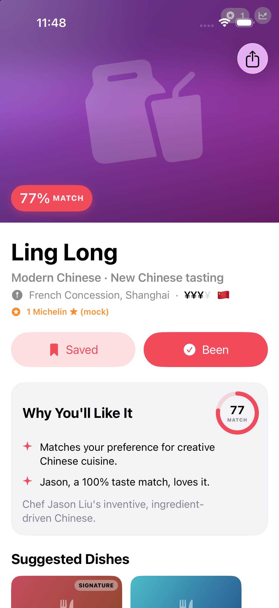
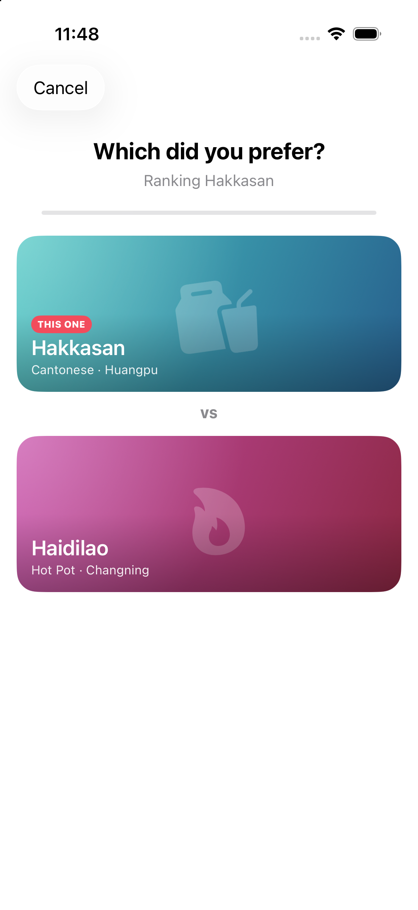
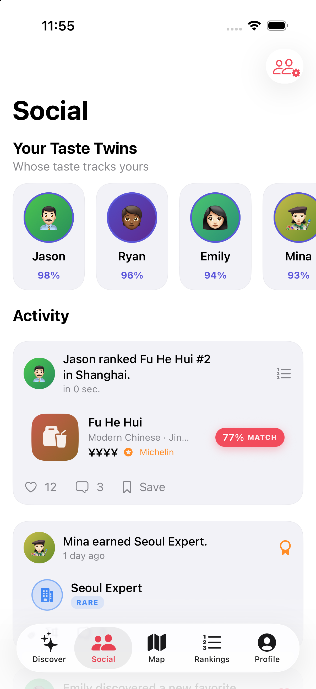
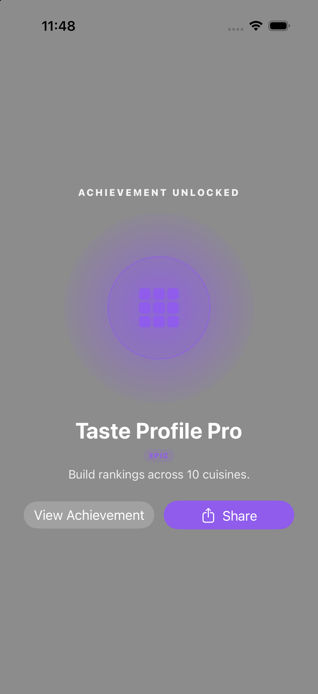
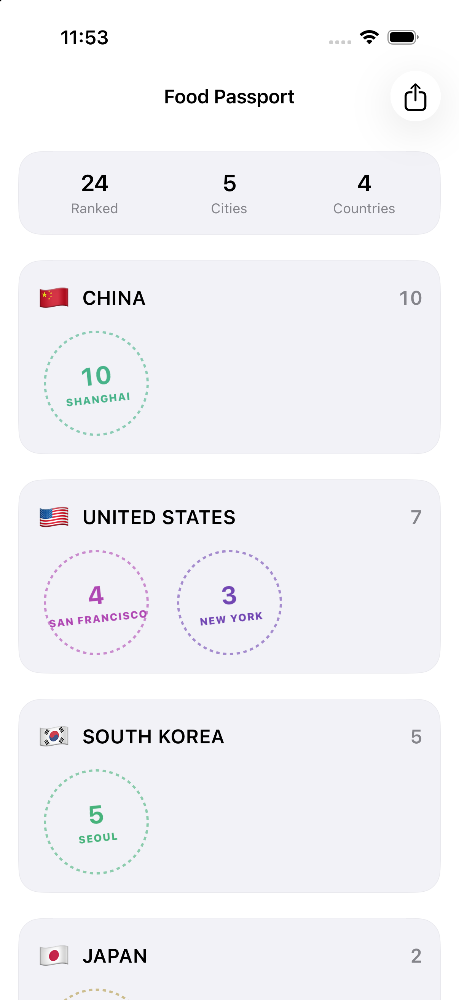
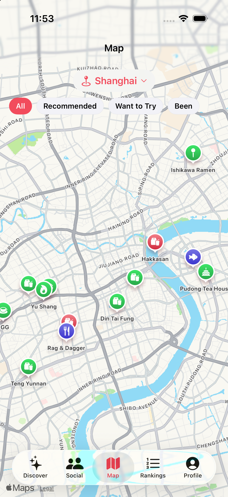
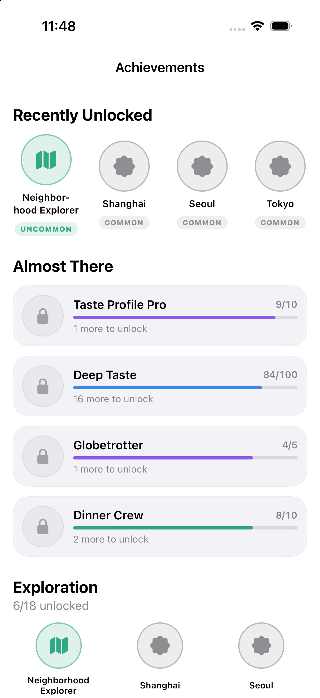
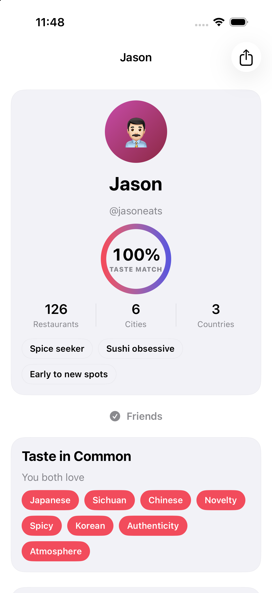

Not another Yelp with badges.
Star ratings and endless reviews tell you what strangers think. Bite tells you what you'll think — by turning every interaction into preference data. Rank a place, and your taste model sharpens. Follow friends, and the people whose taste tracks yours get more say. Explore, and your history becomes an identity.
Personal taste
A learned preference vector places you in the same space as every restaurant, so recommendations are yours — with a reason attached to every match.
Social discovery
Taste-Match scores decide whose opinions matter. A 96% twin moves the needle; a distant palate doesn't.
Exploration
Rankings, achievements, and a food passport turn where you've eaten into progress worth showing off.
Every meal makes the next recommendation smarter.
Ranking generates preference data → better recommendations → more visits → more data. Friends add trusted signal; achievements pull you somewhere new.
A whole product, not a demo screen.
Five tabs and a dozen deep flows — all interactive, all driven by a live recommendation, ranking, and achievement engine.
Personalized match %
A bold, explainable score — “Matches your love of Sichuan · Jason, a 96% taste match, ranks it #1” — louder than any star.
Pairwise rankings
Mark "Been," answer a few "which did you prefer?" duels, and watch it animate onto your city leaderboard.
Taste Match
Cosine similarity over preference vectors surfaces your taste twins — and playfully, where you disagree.
Eat Together
Pick your crew and get a group pick that maximizes satisfaction while penalizing disagreement.
Food Passport
Your ranked history as collectible city stamps, grouped by country, with neighborhood-level completion.
Achievements
Badges (expertise), stamps (places), awards (feats) across five rarities — earned, never grinded.
Real engines, not hardcoded screens.
All domain logic lives in pure, testable engines — never in views. Swap the local mock services for a backend and the UI doesn't change.
score = 0.45·Taste + 0.25·Friend
+ 0.20·Context + 0.05·Popularity
+ 0.05·Novelty
- Taste — cosine of your prefs against a restaurant's attributes.
- Friend — supporters weighted by their taste match with you.
- Context — occasion, budget, distance, vibe from a playful request.
- Novelty — nudges you toward unexplored cuisines & hidden gems.
Designed to feel like a shipping app.
Apple-native design, generous whitespace, tasteful haptics, full light & dark mode — and beautiful, always-available restaurant imagery rendered procedurally so it works offline.

Restaurant detailMatch ring, reasons & dishes

Pairwise rankingWhich did you prefer?

Social & taste twinsWhose taste tracks yours

Achievement unlockTasteful, not game-y

Food PassportHistory as collectible stamps

MapBeen · Want to Try · Recommended

AchievementsBadges · stamps · awards

Friend profileTaste in common
Native, modern, dependency-free.
Compiles and runs directly in Xcode against the iOS 18 simulator — clean build, zero warnings.
Clone it, run it, rank your first meal.
Open the project in Xcode, hit Run, and the app launches as a seeded user with a rich, personalized world — ready to demo the whole loop end to end.
Get it on GitHub ↗